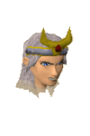
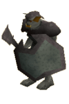

")
Lunar Isle (Members)
Warning | Introduction | Location | Points of Interest | Personalities
Quests | The Dangers of the Isle | Miscellaneous
Quests | The Dangers of the Isle | Miscellaneous
Warning
You will not be able to reach Lunar Isle unless you have reached a certain point during the Lunar Diplomacy quest.
At all times on Lunar Isle, please ensure you are wearing or have the Seal of Passage. If you do not have this on you, then any conversations you try to have with anyone on the island will result in you being kicked out of Lunar Isle and put back in Rellekka.
If you have lost your Seal of Passage, you can obtain one from Brundt in the Long Hall in Rellekka.
Introduction

They're the mysterious Moon Clan; a magical race that use their unbelievable grasp of the mystical arts in everyday activities. If it can be done using magic, the Moon Clan know a way!
Location

To get to Lunar Isle (if you do not have access to the Lunar Isle Teleport spell) you have to speak with Lokar Searunner, found on the docks in Rellekka. This poor pirate has the job of rowing the long trip to Pirates' Cove, where Captain Bentley's ship is docked.
From here, jinx-free ships can sail on to Lunar Isle.
Points of Interest

In the town you have a standard general store and a clothes shop where you can buy some rather interesting items of clothing.
To the north-east lies the entrance to the dungeon area beneath Lunar Isle. This dungeon is actually a large mine, which is not only a source of rune essence, but other precious metals and rare gem rocks like those found in Shilo Village.
Outside the city gates, to the north and south, there is good soil where flax has been found to grow.
To the south-east is the Astral Altar. Not only do you not need a talisman to craft astral runes, you can also 'pray' at the altar to switch your spellbook to Lunar spells.
Personalities

Captain Bentley is a character who proudly sails the seas to Lunar Isle, when his ship isn't cursed by jinxes, that is.
|

Probably the most respected of the Moonclan, the Oneiromancer is a powerful user of Magic, although not in a combat sense. If you complete her tasks, she will grant you access to the Astral Altar, and hence the astral rune and Lunar Spells.
|
|
| With such a large and varied crew, Captain Bentley is always busy and rarely leaves his ship. He is found on the top deck, and will be your point of contact if you wish to sail away from Lunar Isle to Pirates' Cove. | The Oneiromancer is found at the Astral Altar, in the southeastern area of Lunar Isle. |
|

Baba Yaga isn't the sanest of witches, living in a house on legs. The Moonclan have to corral her house to keep it from escaping and have managed to trap it by constructing a pen around the north wall.
|
| Baba Yaga can be found by entering the large, walking house in the north of the town. |
Quests
The following quest can be started on Lunar Isle:
- Dream Mentor (Members)
The Dangers of the Isle
|

Suqahs are found around Lunar Isle, but thankfully are held back from invading the town due to its magical protection.
|
| Suqahs are an interesting creature, they have been affected by the mystical power of Lunar Isle, and have the ability to cast freezing Magic, and other spells such as Water Wave. Aside from this, they may also use dangerous melee attacks against you, so ideally you need to wear good armour that defends you from Magic or melee attacks. |
Miscellaneous
- Suqahs are a Slayer target.
- The dungeon to the north-east contains a mine, where you can mine rune essence, and even gems similar to the rocks found in Shilo Village.
- Praying at the Astral Altar in the south east area will change your spellbook to the Lunar Spell list.
- If you have lost your lunar attire, the Oneiromancer will replace it... for a cost.
- When you have completed Lunar Diplomacy, speak to Baba Yaga to learn the Ourania Teleport spell. This will teleport you close to the entrance to Ourania Cave, where a remarkable Runecrafting altar has been rediscovered.
- Baba Yaga has a stock of 20 battlestaves for sale.

More articles in
Cities and Towns
|
|